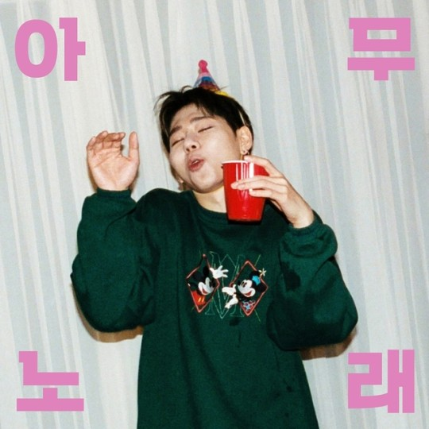

Woo Ji-ho (Korean: 우지호; born September 14, 1992), better known by his stage name, Zico (Korean: 지코), is a South Korean rapper, record producer, singer-songwriter, and leader of the boy group Block B. He has released three solo albums, Gallery (2015), Television (2017) and "Thinking" (2019), of which its two parts were released separately.
Zico is notable for his successful crossover skills within the Korean hip hop scene, maintaining an underground reputation along with mainstream appeal as a Korean idol. He is also a producer of both K-pop and Korean hip-hop music. In 2015 he appeared as a producer with Paloalto of Hi-Lite Records in rap competition television show Show Me the Money 4 while in the show's sixth season, he was in the producer team with his longtime colleague and friend Dean. He is part of the hip-hop crew Fanxy Child.
